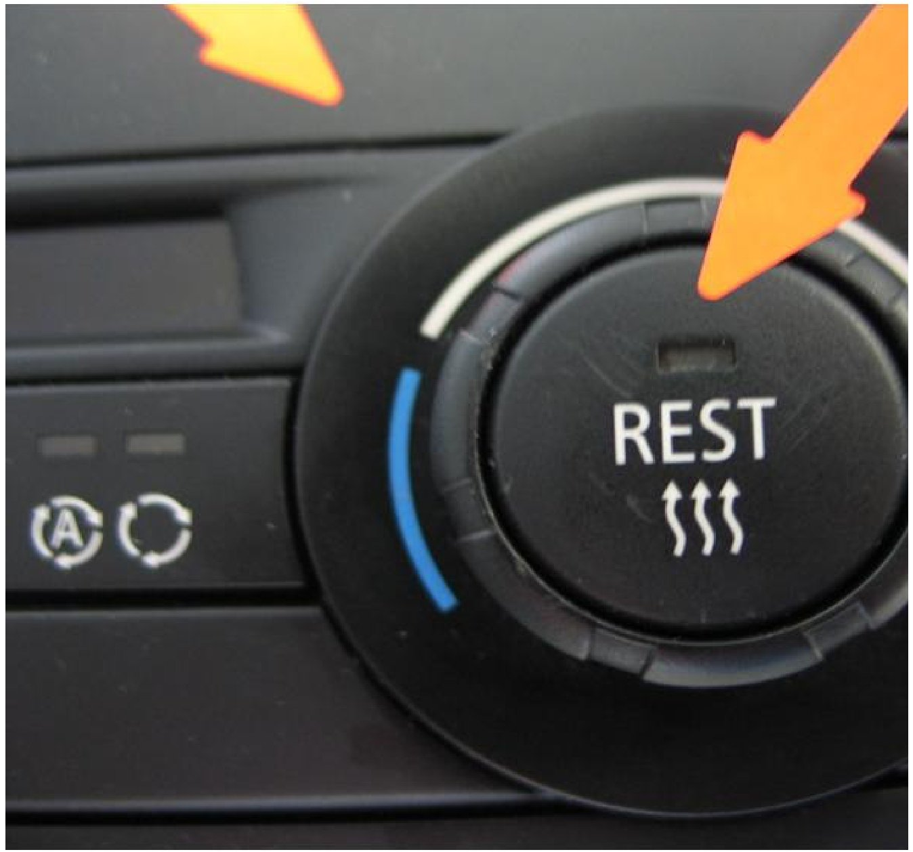

A/C - Control Assembly Damage Information
SI B 64 05 08Heating and Air Conditioning
October 2008
Technical Service
SUBJECT
Damage to the Air Conditioning Control Panel
MODEL
ALL
INFORMATION
For occupant safety in the event of a crash, the operating elements must, by law, give a visual indication of a specific level of force. This force is sufficiently high that damage will not occur under normal operation. If this force is exceeded as a result of external factors, and damage is thereby caused to the Air Conditioning Control Panel, this damage is graded as being caused by the use of excessive force.
Typical examples of damage caused by excessive force are, for example, where the temperature controller/rotary controls and buttons on the air conditioning control panel have been pushed in or have impact, scratch or pressure marks. In other cases, the rotary controls and buttons are stiff; they make noise when turned and their function is limited.
In order to be able to identify these cases of damage caused by the use of excessive force, pictures are attached with examples of such cases.
Example illustrations
Picture 1: Damage to the surface and buttons by excessive force
Picture 2: Button pushed in too far
Picture 3: Scratched panel surface
If the Air Conditioning Control Panel has clearly been damaged due to the use of excessive force, the replacement part cost cannot be claimed under Warranty.
WARRANTY INFORMATION
Control panels which have physical damage are not covered under Warranty.
ATTACHMENTS
view B640508Picture_1.
view B640508Picture_2.

view B640508Picture_3.

Disclaimer